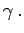
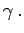

Inhalt Index DeskTop Bronstein

 Geometrie Ebene Trigonometrie Geodätische Anwendungen Vermessungstechnische Anwendungen
Geometrie Ebene Trigonometrie Geodätische Anwendungen Vermessungstechnische Anwendungen


Wenn Punkt B nicht von Punkt A eingesehen werden kann, bestimmt man die Richtungswinkel tAN und tBN über Anschlußrichtungen zu anderen sichtbaren und koordinierten Punkten D und E.
Gegeben: Gemessen:  in in B, möglichst auch 
in in B, möglichst auch 
Gesucht: 
Lösung: Zurückführung auf die 1. Hauptaufgabe, Berechnung von , gemäß (3.114a) und:
| (3.115a) |
| (3.115b) |
| (3.115c) |
| (3.115d) |
| (3.115e) |
| (3.115f) |
| (3.115g) |
| (3.115h) |
| (3.115i) |
| (3.115j) |